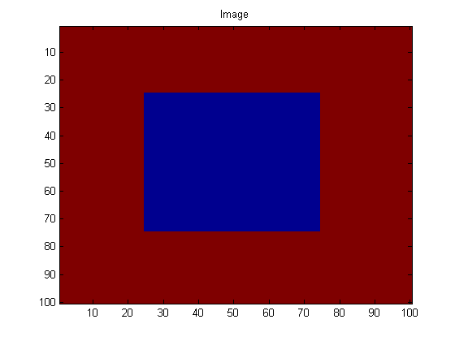
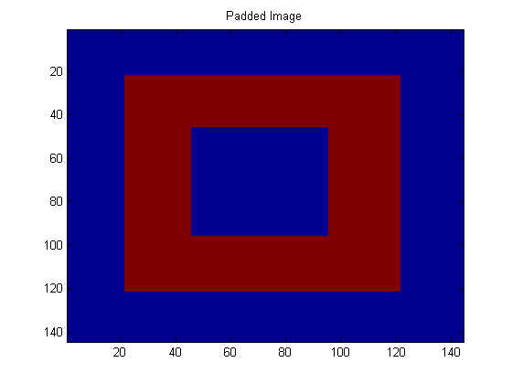
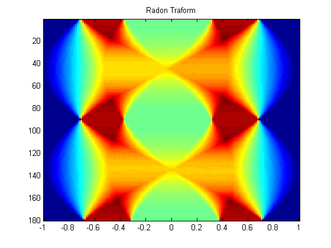

Contents
clear; clc; close all
RADON TRANSFORM OF AN IMAGE
IMG = ones(100,100); %matrix of ones a = zeros(50,50); %matrix of zeros IMG(25:74,25:74) = a; %box of zeros THETA = 1:180; % pad the image with zeros so we don't lose anything when we rotate. [iLength, iWidth] = size(IMG); %dimensions of image iDiag = sqrt(iLength^2 + iWidth^2); %diagonal of image LengthPad = ceil(iDiag - iLength) + 2; %padding of the length WidthPad = ceil(iDiag - iWidth) + 2; %padding of the width %initialize empty matrix to the size of the paddign matrix %padding matrix is square, with side the diagonal of the image padIMG = zeros(iLength+LengthPad, iWidth+WidthPad); %place image in the center of the padding matrix padIMG(ceil(LengthPad/2):(ceil(LengthPad/2)+iLength-1), ... ceil(WidthPad/2):(ceil(WidthPad/2)+iWidth-1)) = IMG; imagesc(IMG); title('Image'); figure; imagesc(padIMG); title('Padded Image'); % loop over the number of angles, rotate 90-theta (because we can easily sum % if we look at stuff from the top), and then add up. Don't perform any % interpolation on the rotating. %side length of paddding matrix, diagonal of image n = size(padIMG,1); %sample points of projection x = linspace(-1,1,n); %grid of query points for interpolation [X1,Y1] = meshgrid(x,x); %number of angle rotations n = length(THETA); %initialize array for radon transform of each angle PR = zeros(size(padIMG,2), n); %interate through all angles for i = 1:n %convert from degrees to radians theta = (90-THETA(i))*pi/180; %rotated coordinate system P = cos(theta)*X1 + -sin(theta)*Y1; %rotated x Q = sin(theta)*X1 + cos(theta)*Y1; %rotated y % interpolate tmpimg = interp2(X1,Y1,padIMG,P,Q); %linear interpolation %onto rotated coordinates tmpimg(isnan(tmpimg)) = 0; %zero NaN % sum PR(:,i) = (sum(tmpimg))'; %line intergral %2.28 in the book end figure; imagesc(x,THETA,PR'); title('Radon Traform');  